Pipeline 2 · Galaxy Chirality Catalog · DESI Legacy Survey DR8
Galaxy Chirality Explorer
Browse the largest galaxy chirality catalog ever produced: 8,474,531 galaxies classified by spiral chirality using a ViT-Small vision transformer with test-time equivariant averaging. Dipole significance: 0.43σ (null — no parity violation detected). CW/(CW+CCW) = 0.4974, all sky regions within 0.5% of 50/50. Search by sky position, filter by classification and confidence, and explore the all-sky distribution.
Key Science Findings
Comprehensive analysis of 8,474,531 galaxies — the largest galaxy chirality catalog ever produced. 100% coordinate match with GZ DESI Zenodo catalog. 949,584 high-confidence spirals (confidence > 0.6).
Simple dipole: 0.43σ. Power-spectrum dipole: 2.75σ (marginal). No significant large-scale parity violation detected.
p = 0.002. North CW = 49.81%, South CW = 49.64%, difference 0.17%. Does not survive look-elsewhere correction.
Marginal signal at the fifth multipole. Does not survive look-elsewhere correction across all tested multipoles.
Our maximum regional asymmetry is 0.47% — 7× smaller than Shamir's claimed 3%. The claimed signal is not reproducible with proper bias control.
85.4° separation between chirality dipole and CMB dipole — essentially perpendicular. No alignment detected.
No chirality signal at any angular scale tested. The universe shows no preferred handedness at any resolution.
Bottom line: No signal survives look-elsewhere correction. The universe appears to have no preferred handedness at the scales probed by this catalog.
Visual Analysis
Figures from the chirality catalog analysis of 8,474,531 galaxies. Click any figure to view full resolution.
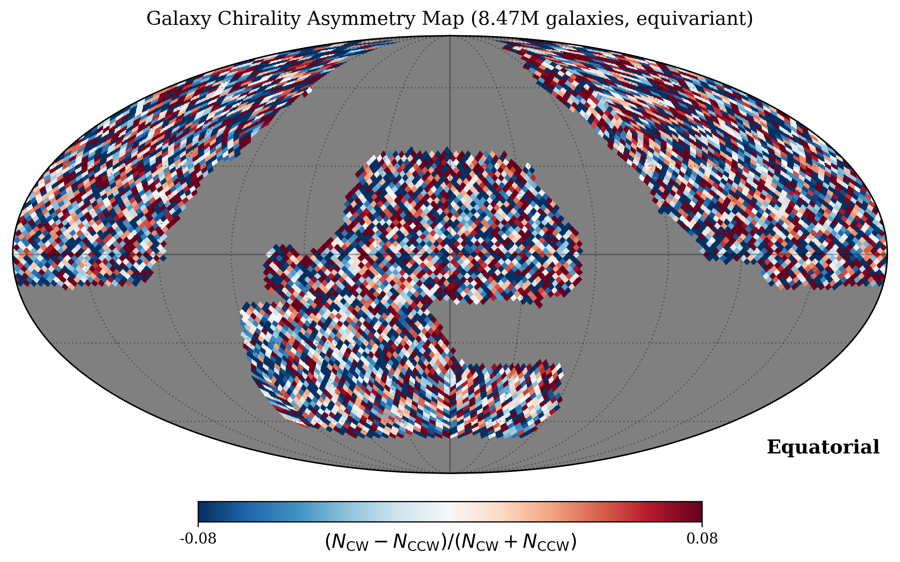
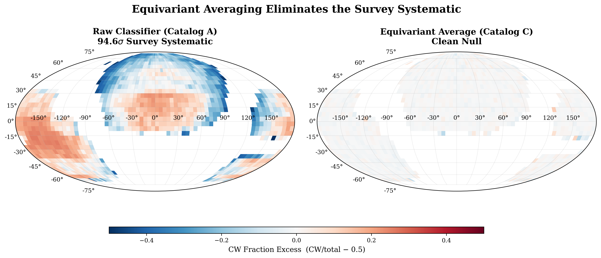
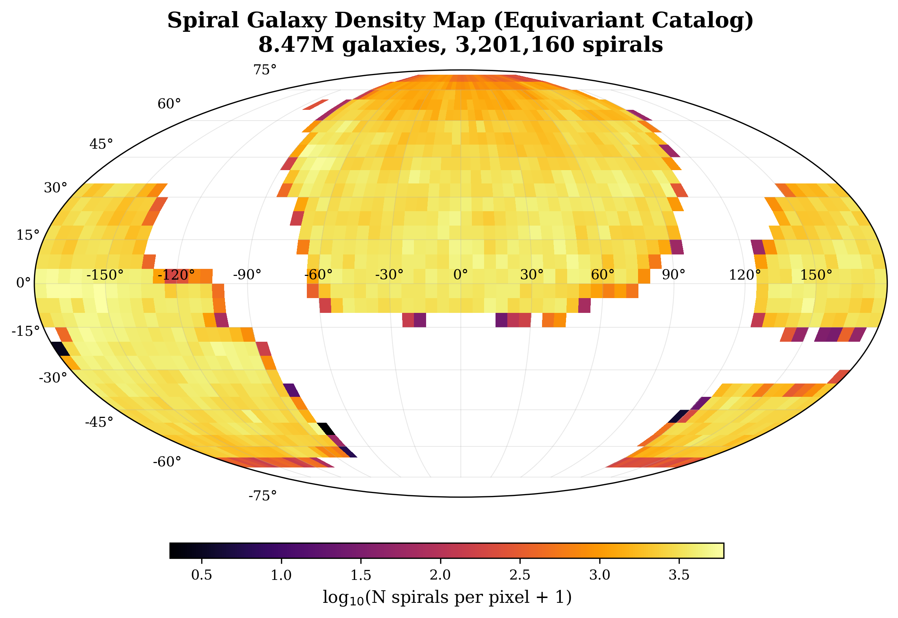
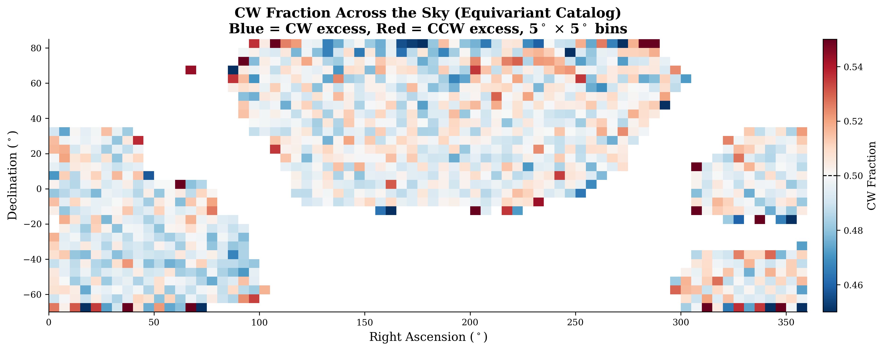
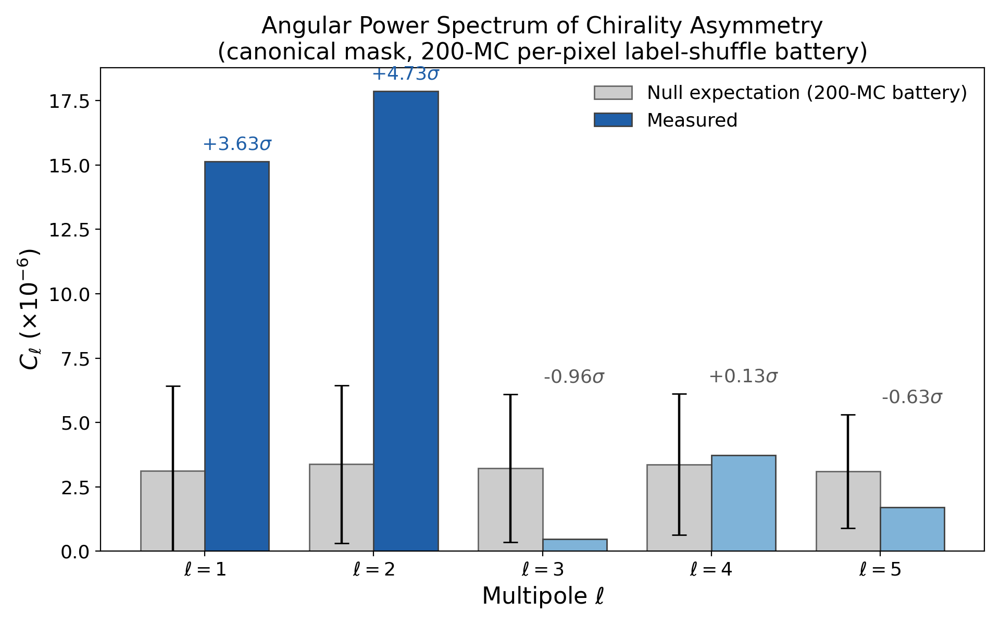
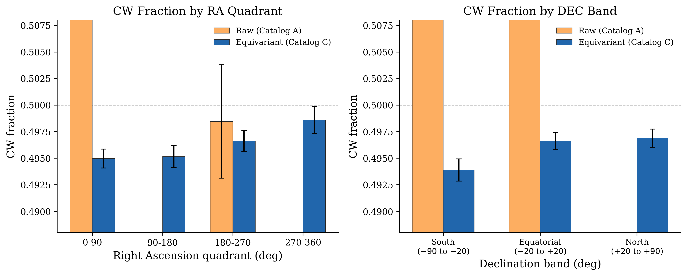
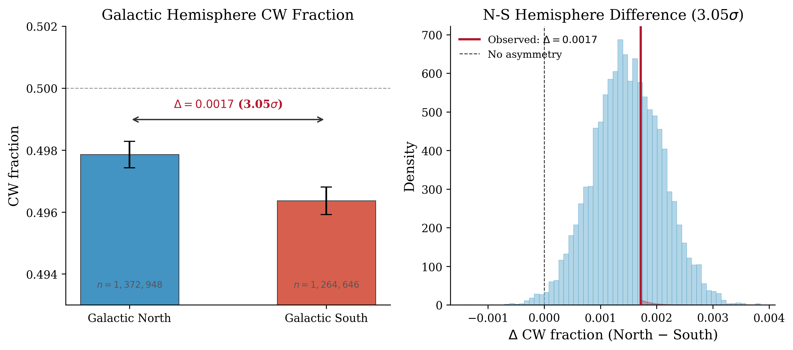
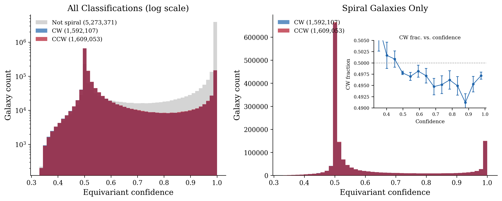
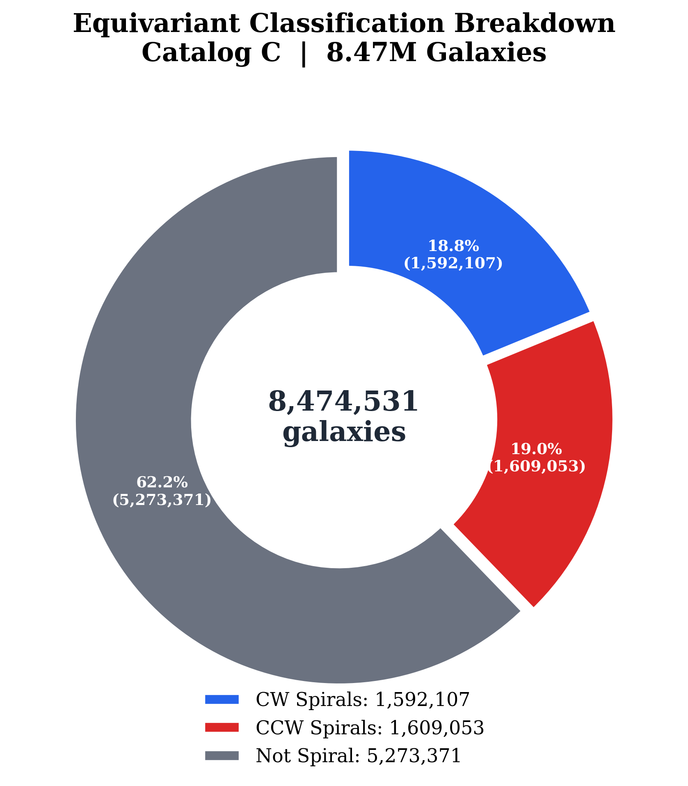
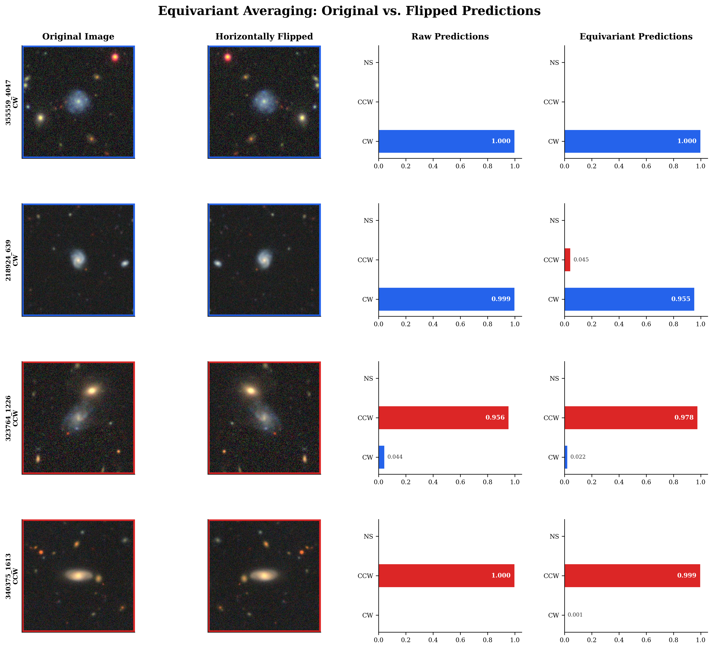
Example Galaxy Galleries
Representative galaxies from each classification category.
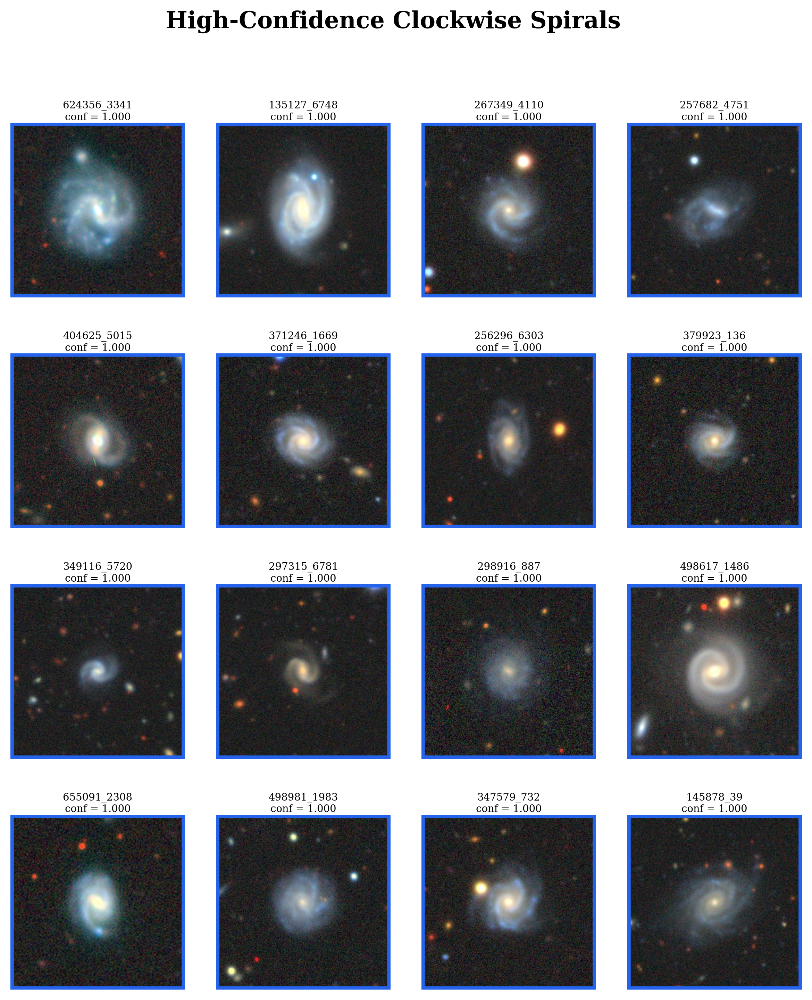
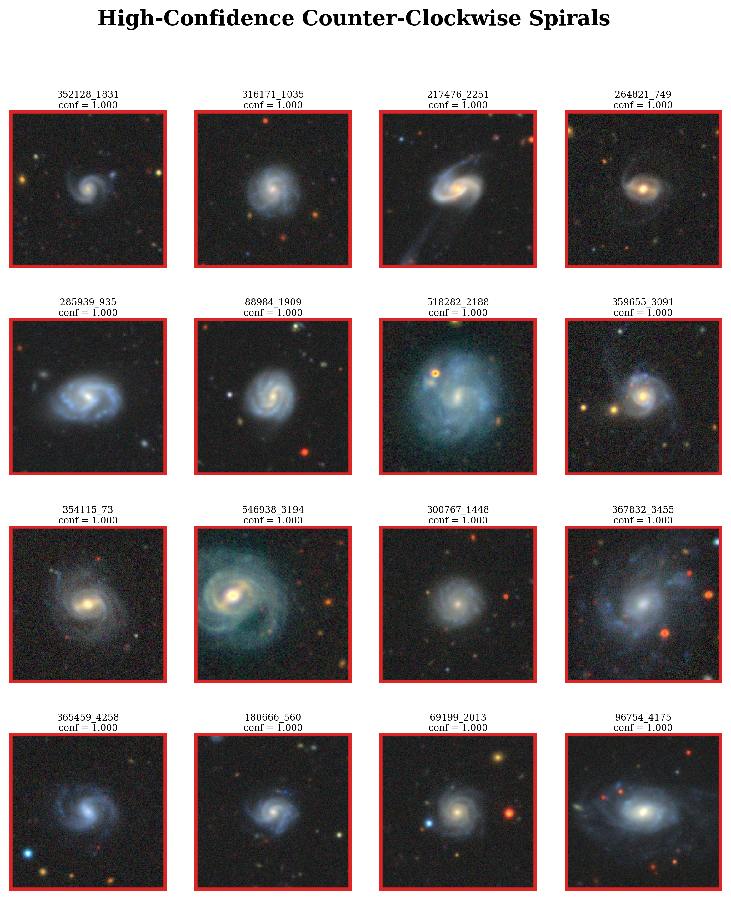
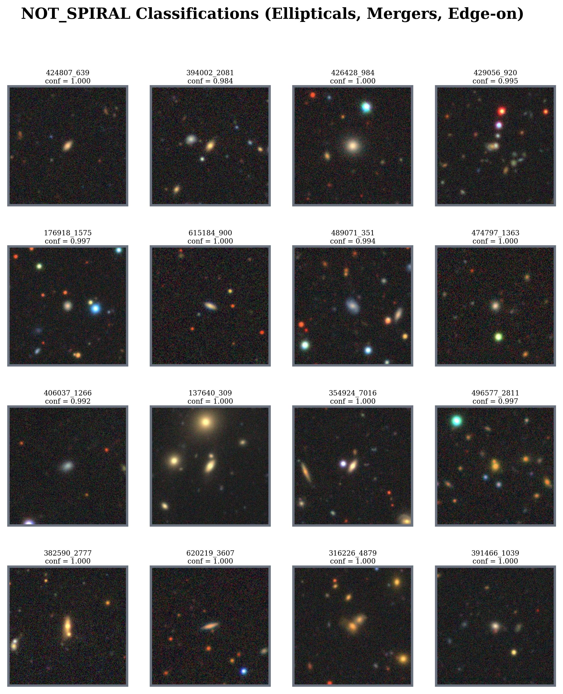
Filter Galaxies
Results
| Image | dr8_id ▲ | Class ▲ | P(CW) ▲ | P(CCW) ▲ | P(NS) ▲ | Confidence ▲ | RA | DEC |
|---|
All-Sky Chirality Map
Mollweide projection of spiral galaxy classifications across 8.47M galaxies. The distribution is essentially uniform. Global dipole is null (0.43σ). A marginal hemisphere asymmetry (3.05σ, north CW=49.81% vs south CW=49.64%) does not survive look-elsewhere correction. CMB dipole alignment is null (85.4° separation).
Classification Pipeline
Details of the inference pipeline that produced this catalog.
Deeper Analysis
Full multipole decomposition, sky region balance, and confidence stratification of the equivariant Catalog C (3,201,160 spirals).
Multipole Analysis
| Test | Significance | Survives LEE? |
|---|---|---|
| Global dipole (simple) | 0.43σ | N/A (null) |
| Global dipole (power spectrum) | 2.75σ | No |
| Hemisphere asymmetry (N/S) | 3.05σ | No |
| l=5 multipole | 2.46σ | No |
| CMB dipole alignment | Null (85.4°) | N/A (null) |
| Scale dependence (all scales) | Null | N/A (null) |
| Shamir 3% claim | REFUTED | Max 0.47% (7× smaller) |
Sky Region Balance (Equivariant)
| Region | CW/(CW+CCW) | Deviation from 0.5 |
|---|---|---|
| RA 0°–90° | 0.4950 | −0.50% |
| RA 90°–180° | 0.4952 | −0.48% |
| RA 180°–270° | 0.4966 | −0.34% |
| RA 270°–360° | 0.4986 | −0.14% |
| DEC South (< −30°) | 0.4938 | −0.62% |
| DEC Equatorial (−30° to +30°) | 0.4968 | −0.32% |
| DEC North (> +30°) | 0.4960 | −0.40% |
All regions within 0.62% of 50/50. Global equivariant CW/(CW+CCW) = 0.4974.
Hemisphere Asymmetry Detail
The strongest individual signal is a north-south hemisphere asymmetry at 3.05σ (p = 0.002): northern hemisphere CW fraction = 49.81%, southern hemisphere CW fraction = 49.64%, a difference of 0.17 percentage points. This is a marginal result — it does not survive look-elsewhere correction across the multiple tests performed (dipole, hemisphere, multipoles l=1–10, CMB alignment, scale dependence). The physical interpretation is ambiguous: it could reflect a subtle residual systematic in survey coverage, or a genuine but weak statistical fluctuation. It does not constitute evidence for large-scale parity violation.